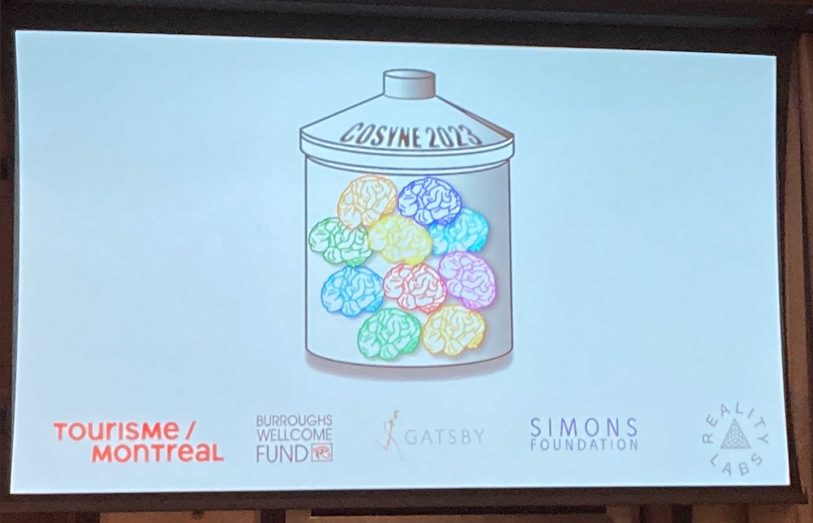

Resources | Cosyne 2023
March 2023

Cosyne 2023, it's a wrap!! What a fantastic meeting in Montreal, with some seriously amazing computational & systems neuroscience 😍🧠 There was so much information that it would be next to impossible to intake and process it all in six days, which is why I'm writting this resource 🤗 With that, let me explain this blog post's aims & audience. Let's go!
A brief aside: this blog post is NOT the trends that were observed at Cosyne. If you are looking for that go to the companion post: Trends | Cosyne 2023.
Blog post aims: This blog post is a collection of all the 💯 resources that were generated and discussed during the conference. It is a quick and easy way to go back and catch what you missed, or if you didn't attend to still take part in Cosyne 2023! I hope this post makes computational & systems neuroscience more accesible for all.
Who is this blog post for? This blog post is for anyone and everyone who wants to learn more about computational & systems neuroscience! This includes (1) people that came to Cosyne and (2) those that couldn't make it; pretty all encompasing I hope 😅
Let's get started! I have set up this blog post so that you can re-live or live Cosyne 2023 at three discrete levels of depth. Please feel empowered to choose your own experience. In order of increasing involvement:
If you make it to the end, you'll find some of my favorite visuals from Montreal & Mont Tremblant. No cheating though! Thanks for sticking around - happy learning 🤓
| Live-Thread | Slides & Jupyter Notebooks | Slack | NWB Github | Dandi Github |
Tutorial - International Brain Laboratory
| Live-Thread | Colab Introduction | Colab IBL with ONE | Colab IBL with NWB |
Simons Foundation Sponsored Tutorial - Reinforcement Learning
| Recording | Slides | Colab Notebook |
Opening Remarks
| Live-Thread | Recording |
Session 1 - Keynote
| Live-Thread | Recording |
| Live-Thread | List of Poster Titles | World Wide Neuro Posters |
| Live-Thread | Recording |
| Live-Thread | Recording |
| Recording |
Session 5 - Brains in Time & Space
| Live-Thread | Recording |
Poster Session 2
| Live-Thread | List of Poster Titles | World Wide Neuro Posters |
| Live-Thread | Recording |
| Live-Thread | Recording |
| Live-Thread | Recording |
| Live-Thread | Recording |
Poster Session 3
| Live-Thread | List of Poster Titles | World Wide Neuro Posters |
| Live-Thread | Recording |
| Live-Thread | Recording |
| Live-Thread | Recording |
| Live-Thread | Recording |
| Live-Thread | Workshop Info |
Taming Complexity - Discovering Interpretable Latent Spaces in Human Brains & Behaviors
| Live-Thread | Workshop Website |
| Live-Thread | Workshop Info |
Congrats on making it to the end!! As promised, here are some of my favorite shots from Cosyne 23 both from Montreal and Mont Tremblant 😎


Please check out the companion post Trends | Cosyne 2023 where I lay out Cosyne 23 trends, and if you're really motivated I encourage you go back to the Cosyne 2022 Resources post to see how the field has evolved over the past year 😊 Until next time!
A brief aside: this blog post is NOT the trends that were observed at Cosyne. If you are looking for that go to the companion post: Trends | Cosyne 2023.
Blog post aims: This blog post is a collection of all the 💯 resources that were generated and discussed during the conference. It is a quick and easy way to go back and catch what you missed, or if you didn't attend to still take part in Cosyne 2023! I hope this post makes computational & systems neuroscience more accesible for all.
Who is this blog post for? This blog post is for anyone and everyone who wants to learn more about computational & systems neuroscience! This includes (1) people that came to Cosyne and (2) those that couldn't make it; pretty all encompasing I hope 😅
Let's get started! I have set up this blog post so that you can re-live or live Cosyne 2023 at three discrete levels of depth. Please feel empowered to choose your own experience. In order of increasing involvement:
- Read the session and talk titles below
This will give you the gist of topics at Cosyne 2023. There is an important reason why I wanted to only see the talk titles without authors, institutions, etc. in one place. If you want to know why and more importantly be challenged visit the companion piece: Trends | Cosyne 2023. - Click on the "Live-Thread"
This will give you a little bit more depth because it includes (1) the talk and discussion highlights and (2) the key slides from each of the talks as I was listening live! Hopefully you'll get a real feel for the science without having to listen to the whole talk! - Click on the "Recording"
This gives you the most accurate account of what happened, but is of course a time investment!
If you make it to the end, you'll find some of my favorite visuals from Montreal & Mont Tremblant. No cheating though! Thanks for sticking around - happy learning 🤓
Thursday 3/09
Tutorial - Neurodata Without Borders + DANDI| Live-Thread | Slides & Jupyter Notebooks | Slack | NWB Github | Dandi Github |
Tutorial - International Brain Laboratory
| Live-Thread | Colab Introduction | Colab IBL with ONE | Colab IBL with NWB |
Simons Foundation Sponsored Tutorial - Reinforcement Learning
| Recording | Slides | Colab Notebook |
Opening Remarks
| Live-Thread | Recording |
Session 1 - Keynote
| Live-Thread | Recording |
- Consistent and interpretable learnable latent embeddings for joint behavioral and neural analysis
| Live-Thread | List of Poster Titles | World Wide Neuro Posters |
Friday 3/10
Session 2 - Movement in the Brain| Live-Thread | Recording |
- Dynamical modeling, decoding, and control of multiscale neural dynamics underlying behavior
- Do spontaneous movements drive neuronal activity in the primate visual cortex?
- Targeted stimulation of movement ensembles in the motor cortex drives learned movements
- A cell type specific error correction signal in mouse posterior parietal cortex
| Live-Thread | Recording |
- Identifying mechanisms of cognitive computations from spikes
- A neural circuit mechanism for context—dependent selection via population dynamics
- Neural and behavioral signatures of inference over time
| Recording |
- The ‘low—power mode’ of neocortex: energy use and coding precision during food scarcity
- Investigating the neural basis of derivative gain in the visual—motor pathway for pursuit
- A systematic approach to quantify the contribution of individual glomeruli to olfactory percepts
- Linking transcriptomic, functional, and connectivity data in individual neurons
Session 5 - Brains in Time & Space
| Live-Thread | Recording |
- Topology preserved schema of space in the orbitofrontal cortex
- Coding of action × position in the medial entorhinal cortex of flying bats
- A region—specific code for specific and generalized representations across prefrontal cortex and hippocampus
- Neuronal allocation to a memory trace in mice
- Neuronal allocation to a memory trace in mice
Poster Session 2
| Live-Thread | List of Poster Titles | World Wide Neuro Posters |
Saturday 3/11
Session 6 - Decision Making| Live-Thread | Recording |
- Neural architecture of confidence
- Understanding everything, everywhere: distributed evidence accumulation in corticostriatal circuitry
- Procedural replay in dorsolateral striatum is revealed using an unsupervised point process model
- Unsupervised discovery of a decision—making algorithm directly from neural data
| Live-Thread | Recording |
- Rethinking how we Analyze Data from Neuroscience Experiments: the Case for Sparse Deconvolutional Learning
- Dynamic inverse reinforcement learning for complex time—varying behavior
- Interpretable deep learning for deconvolution of multiplexed neural signals
| Live-Thread | Recording |
- Neuronal mechanisms underlying social motivation
- Social Exclusion Modifies the Neural Representation of Physical Pain
- Exploring the architectural biases of the canonical cortical microcircuit
- Mechanisms underlying the self-organization of patterned activity in the developing visual cortex
| Live-Thread | Recording |
- Love, death, and oxytocin—the challenges of mouse maternal care
- A neural clock underlying the temporal dynamics of an auditory memory
- Distinct excitatory cell—types differentially contribute to auditory—guided behavior
- From Behavioral Syllables to the Book of Life: A Dynamic Behavioral Topic Model
- Causes and consequences of exploration across development
Poster Session 3
| Live-Thread | List of Poster Titles | World Wide Neuro Posters |
Sunday 3/12
Session 10 - Network Function| Live-Thread | Recording |
- The role of population structure in computations through neural dynamics
- Feedback Controllability as a Normative Theory of Neural Population Dynamics
- State space structure of random recurrent neuronal networks
- Local connectivity and synaptic dynamics in mouse and human neocortex
| Live-Thread | Recording |
- The synaptic dynamics of olfactory learning and behavior
- Flexible neuromodulation of synaptic strengths via electrical shunting in dendritic spines
- Balanced excitation and inhibition could help estimate gradients
| Live-Thread | Recording |
- Cognition, Politics, Morality, Gender: You Name It – Other Primates Have It, Too
- Vectorized error signals in cortical dendrites during a brain—computer interface task
- Biologically plausible backpropagation across arbitrary timespans via local neuromodulators
- The geometry of sensory and cognitive representations implies a population’s causal impact on choice
- BCI learning phenomena can be explained by gradient—based optimization
| Live-Thread | Recording |
Monday 3/13
Workshops - Day 1| Live-Thread | Workshop Info |
Tracks spanning one day
We're now going to briefly dive into the Taming Complexity workshop because as far as I know it's the only workshop at Cosyne23 to record and post lectures 👇👇👇
- Making plasticity work: biologically plausible rules for learning and credit assignment
- Neurodevelopment and Evolution: The Formation of Innate Circuit Priors and Behaviors
- Are neurons interpretable? Disentangled representations and modularity in biological and artificial brains
- Taming Complexity: Discovering Interpretable Latent Spaces in Human Brains & Behaviors
- From connectomics to a quantitative understanding of neural network function
- Learning offline: replay, planning and memory consolidation across species
- How do interneurons control neural computations and memory processes? An integrated experimental-computational approach
- Shaping circuit functions via plastic and diverse inhibition
- Neural mechanisms of sequence learning and execution
- Seeking universality while celebrating heterogeneity among biological attractor networks
Taming Complexity - Discovering Interpretable Latent Spaces in Human Brains & Behaviors
| Live-Thread | Workshop Website |
- Recording | Introduction
- Recording | Speech encoding in single neurons and neural populations
- Recording | The geometry of flexible domain-general cognition in human medial frontal cortex and hippocampus
- Recording | As simple as possible but no simpler: Irreducible complexity in motor control
- Recording | Structure and variability in human brains through the lens of naturalistic movements
- Recording | Tracking changes in mesoscale dynamics during neuroprosthetic control using latent spaces
- Recording | Uncovering the neural representation of speech in a person with paralysis
- Recording | The Case for Uninterpretable Latent Spaces
- Recording | Representation distances that satisfy the triangle inequality and capture noise correlation structure
- Recording | Learning representations of behavior across many timescales
- Recording | Vignettes in Interpretable Behavior Modeling
Tuesday 3/14
Workshops - Day 2| Live-Thread | Workshop Info |
Tracks spanning one day
- Top-down interactions in the neocortex: Structure, function, plasticity, and models
- A wrinkle in time: Neuroscience at multiple timescales
- Dynamic geometrical transformations: Language of flexible brain computations
- What I cannot create I do not understand: analyzing neural and behavioral data with generative models
- Dendritic computations and neuro-inspired AI
- Computational mechanisms underlying decision uncertainty and confidence in brain and behavior
- Why networks learn what they do: Insights from deep learning theory for neuroscience
- The social brain: circuits, systems, and species
- Neural mechanisms of sequence learning and execution
- Seeking universality while celebrating heterogeneity among biological attractor networks
Congrats on making it to the end!! As promised, here are some of my favorite shots from Cosyne 23 both from Montreal and Mont Tremblant 😎
Please check out the companion post Trends | Cosyne 2023 where I lay out Cosyne 23 trends, and if you're really motivated I encourage you go back to the Cosyne 2022 Resources post to see how the field has evolved over the past year 😊 Until next time!